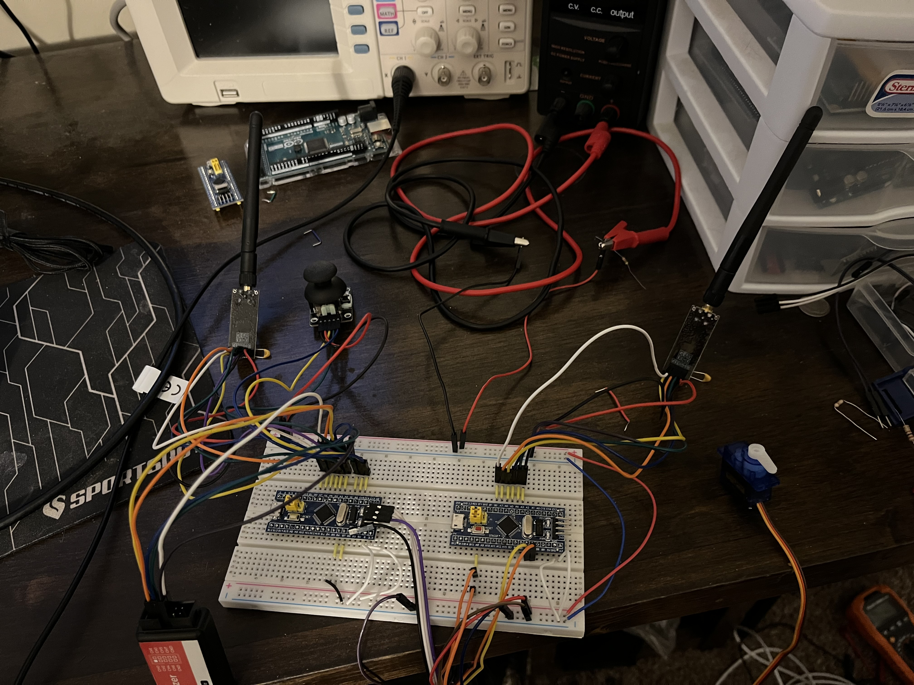

ETHAN BRAUN
STUDENT OF COMPUTER ENGINEERING AND ELECTRICAL ENGINEERING TECHNOLOGY
Hi! I'm Ethan, a student of computer and electrical engineering, based out of Southern Illinois.
My range of skills includes electrical circuits, microcontrollers and software engineering
PROJECTS
Radio Communication using STM32
In this project, I used two STM32F103C8T6's (better known as a "Bluepill")
to interface with the nRF24L01 Radio module using the SPI interface.
I wrote a driver that was able to successfully transmit and receive packets of information, and I used this ability to control the position
of a servo motor attached to one of the Bluepills using an analog joystick remote on the other.
During this project, I learned a lot about STM32 devices, PWM, SPI, and UART which I used extensively for debugging. I also made liberal use of a logic analyzer using the Saleae Logic Software
ABOUT
I started Electrical Engineering Technology at John A. Logan College in 2019. While there,
I learned the fundamentals of circuit design, both analog and digital.
I had the opportunity to learn how to use Raspberry Pi, Arduino, and PLC ladder logic.
After that, I transferred to Southern Illinois University, where I am currently studing Computer Engineering.
I've learned about such topics as operating systems, Linux, algorithms, and electrical circuit design.
My first internship was with EMAC Inc., a local company specializing in embedded circuit board design. During my
time there, I gained a lot of exposure to the hardware and software devlopment cycle, and got to use tools such as Altium and
LTSpice. I regularly reviewed and interpreted schematics and created parts for our internal database. I also helped with
testing and verifying boards, and also added functionality to a command-line tool for using PWM on one of our custom boards.
My second internship was at Hunter Engineering Company, where I worked regularly on an extensive C++ codebase to complete bug fixes
and implement new features into the company's tire balancers. While there, I learned more about multi-threaded applications,
event-driven programming and GUI design. I also regularly worked with Visual Studio and GDB.